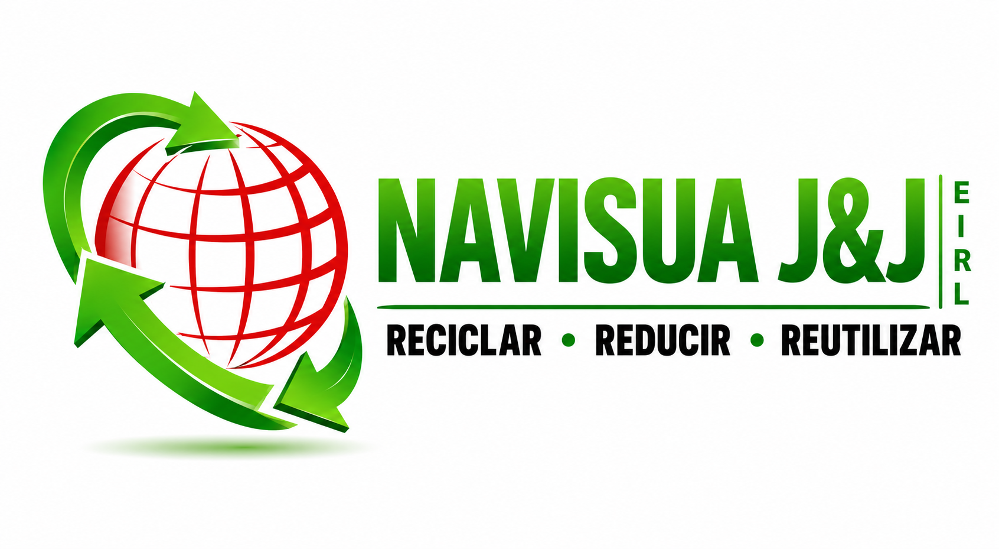
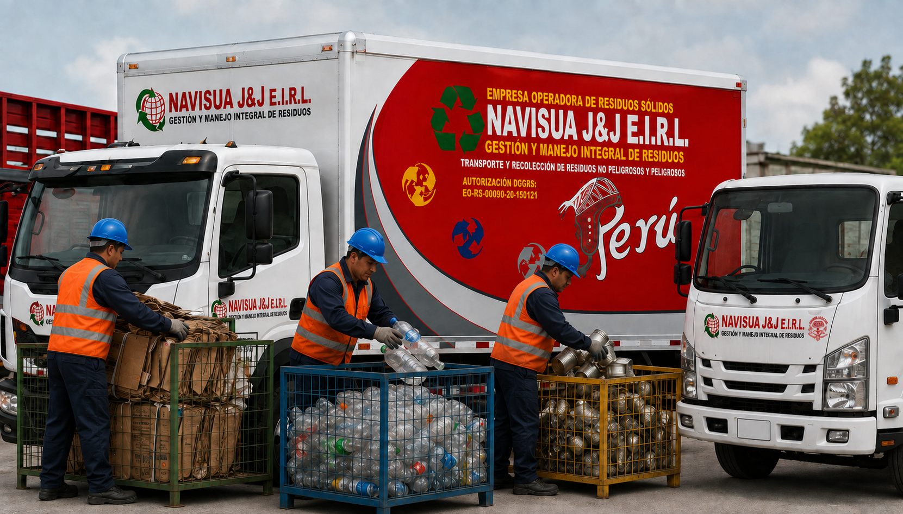
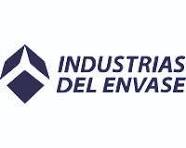
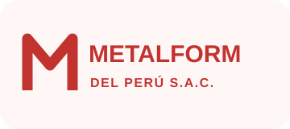
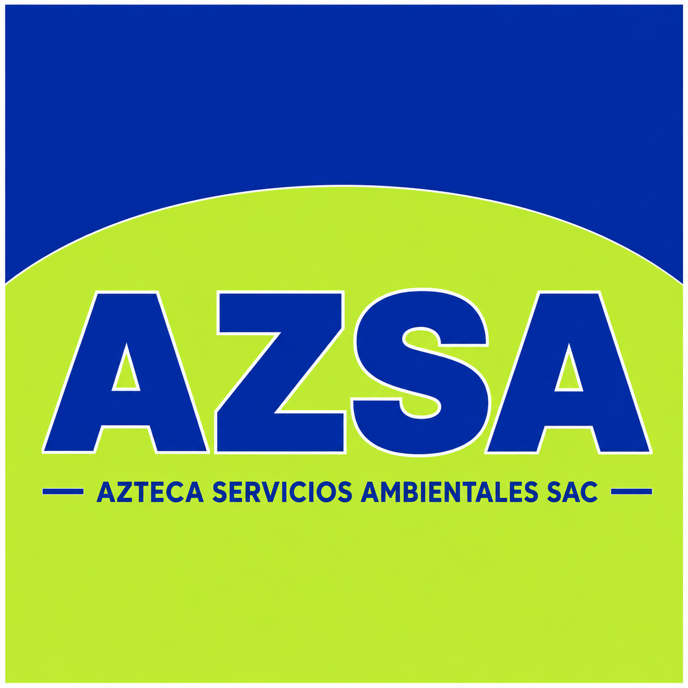

Misión
Gestionar residuos con eficiencia y responsabilidad.


Operador de residuos sólidos · Perú
Recolección, transporte y gestión responsable de residuos sólidos para empresas e industrias.
Quiénes somos
NAVISUA J&J E.I.R.L. brinda soluciones relacionadas con la gestión de residuos sólidos, atendiendo las necesidades de empresas e industrias mediante operaciones desarrolladas bajo criterios de responsabilidad ambiental, seguridad y eficiencia operacional.
Conozca a nuestro equipo →Gestionar residuos con eficiencia y responsabilidad.
Ser un aliado ambiental confiable del sector productivo.
Servicio seguro, cercano y trazable.
Transformar materiales en nuevos recursos.
Soluciones a medida
De principio a fin
Gestionamos cada etapa con una flota lista para responder a las necesidades de su operación.
Capacidad que se ve
Unidades operativas para el transporte y recolección responsable de residuos.
Lista de precios NAVISUA
Materiales reciclables disponibles para venta. Consulte stock, volumen y condiciones comerciales con nuestro equipo.
Consultar por WhatsAppReferencia internacional
Consulte información referencial sobre cotizaciones internacionales de metales.
Cuidamos lo que importa
NAVISUA J&J E.I.R.L. tiene implementado un Sistema de Gestión de Seguridad y Salud en el Trabajo orientado a la prevención de accidentes, incidentes y enfermedades ocupacionales.
Nuestro enfoque
Relaciones que suman



Información para decidir
Orientación especializada
Acceda a una plataforma especializada en orientación y servicios relacionados con trámites ambientales y gestión de residuos sólidos.
Hablemos de su operación
Complete el formulario y preparemos la solución adecuada para sus residuos.
También puede escribirnos directamente por WhatsApp.
Estamos para atenderle
RUC: 20603002297
Celular: 947 185 874
Correo: navisua.eirl@gmail.com